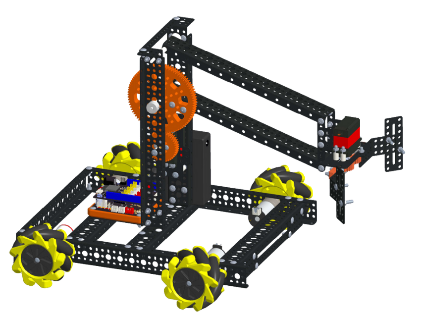

1. Màn hình 4 số LED 7 đoạn
{kind=link}
Màn hình 4 số LED 7 đoạn sử dụng LED 7 đoạn anode chung 4 chữ số để hiển thị các số và một vài ký tự đặc biệt. Module có thể được sử dụng trong những dự án để hiển thị các dữ liệu như tốc độ, thời gian, điểm số, nhiệt độ, khoảng cách, v.v.
1. Mua sản phẩm

2. Thông số kỹ thuật
Thông số kỹ thuật của màn hình LED 7 đoạn
Điện áp hoạt động: 3.3V
Số led 7 đoạn: 4
Điều khiển: Sử dụng 2 chân tín hiệu DIO, CLK
Driver chip: TM1637
Màu đoạn led kỹ thuật số: Đỏ
Kích thước: 48 x 24 x 23.4 mm (D x R x C)
Pinout của màn hình 4 số LED 7 đoạn
Màn hình 4 số LED 7 đoạn có 4 chân, và mỗi chân có chức năng như sau:
STT |
Chân |
Chức năng |
|---|---|---|
1 |
GND |
Nối đất |
2 |
VCC |
Cấp nguồn (3.3V) |
3 |
CLK |
Clock |
4 |
DIO |
Data |
3. Kết nối
Bước 1: Chuẩn bị các thiết bị như sau:

|

|
|
|---|---|---|
Máy tính lập trình Yolo:Bit |
Mạch mở rộng cho Yolo:Bit |
Màn hình LED 7 đoạn (kèm dây Grove) |
Bước 2: Cắm Yolo:Bit vào mạch mở rộng
Bước 3: Sử dụng dây Grove cắm vào màn hình LED
Bước 4: Kết nối thiết bị vào P10/ P13 trên mạch mở rộng
{kind=link}
Trên mạch mở rộng các bạn có thể sử dụng các khe cắm có 2 chân tín hiệu để kết nối với LED 7 đoạn
4. Hướng dẫn lập trình với OhStem App
Bước 1: Tải thư viện LED 7 đoạn, bằng cách dán đường link sau https://github.com/AITT-VN/yolobit_extension_led7segment.git vào phần tìm kiếm thư viện.
Xem hướng dẫn tải thư viện tại đây.

{kind=link}
Để làm việc với module LED 7 đoạn bạn cần sử dụng câu lệnh sau để khai báo chân được sử dụng trong chương trình:
{kind=link}
Bước 2: Gửi chương trình sau vào Yolo:Bit:
{kind=link}
Note
Giải thích chương trình:
Ở trong vòng lặp mãi, chúng ta sẽ cho module LED 7 đoạn hiển thị lần lượt dòng chữ ‘abcd’, 4 số ‘1234’ và chữ ‘HiHi’ trong 1 giây (chờ 1 giây). Chương trình này sẽ được lặp đi lặp lại liên tục cho tới khi ta rút nguồn điện hoặc reset.
5. Hướng dẫn lập trình Arduino
Mở phần mềm Arduino IDE. Xem hướng dẫn lập trình với Arduino tại đây.
Copy đoạn code sau, click vào nút
Verifyđể kiểm tra lỗi chương trình. Sau khi biên dịch không báo lỗi, bạn có thể nạp đoạn code vào board.
#include <TM1637Display.h>
#include “Yolobit.h”
Yolobit yolobit;
// Định nghĩa các đầu vào/ra
int CLK0P = P10
int DIO = P13
// Tạo đối tượng hiển thị TM1637
TM1637Display display = TM1637Display(CLK, DIO);
// Mảng lưu giá trị hiển thị trên từng segment
const uint8_t done[] = {
SEG_B | SEG_C | SEG_D | SEG_E | SEG_G, // d
SEG_A | SEG_B | SEG_C | SEG_D | SEG_E | SEG_F, // O
SEG_C | SEG_E | SEG_G, // n
SEG_A | SEG_D | SEG_E | SEG_F | SEG_G // E
};
// Biểu tượng độ C
const uint8_t celsius[] = {
SEG_A | SEG_B | SEG_F | SEG_G, // Biểu tượng độ
SEG_A | SEG_D | SEG_E | SEG_F // C
};
void setup() {
display.clear();
display.setBrightness(7); // set độ sáng màn hình (từ 0 tới 7, 0 tối nhất và 7 sáng nhất)
}
void loop() {
// Hiển thị số đếm từ 0 tới 9
int i;
for (i = 0; i < 10; i++)
{
display.showNumberDec(i);
delay(500);
display.clear();
}
display.showNumberDec(21, false); // Hiển thị __21
delay(2000);
display.clear();
display.showNumberDec(21, true); // Hiển thị 0021
delay(2000);
display.clear();
// Hiển thị thời gian 15:30
display.showNumberDecEx(1530, 0b11100000, false, 4, 0); // 0b11100000 : dấu chấm giữa là 3, xếp theo thứ tự bên trái
delay(2000);
display.clear();
// Hiển thị nhiệt độ 23 độ C
int temperature = 23; // hoặc có thể đọc từ cảm biến nhiệt độ
display.showNumberDec(temperature, false, 2, 0);
display.setSegments(celsius, 2, 2);
delay(2000);
display.clear();
// Hiển thị chữ dOnE
display.setSegments(done);
delay(2000);
display.clear();
}
Note
Giải thích chương trình: Sau khi chạy chương trình, các thông tin sẽ được hiển thị lên màn hình LED